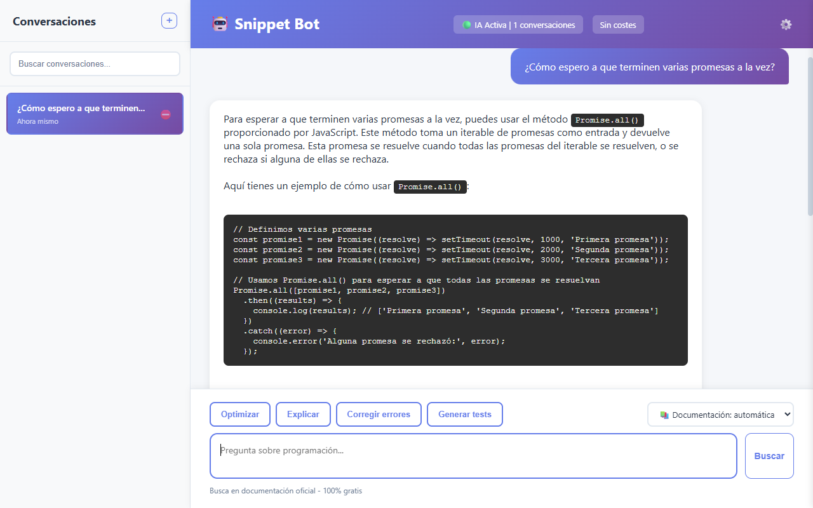

Documentación oficial en cada respuesta
La IA recibe el contenido real de la documentación (firmas, parámetros, ejemplos), no solo un enlace, y te muestra las fuentes que ha consultado.
Código abierto · MIT · IA 100% local
Pregunta en español y recibe respuestas basadas en la documentación oficial de JavaScript, React, Node.js y más, con las fuentes citadas. La IA corre en tu equipo con Ollama: sin APIs de pago ni suscripciones.

Un modelo pequeño que corre en tu equipo no se sabe de memoria cada API. Por eso, antes de responder, la app busca la documentación oficial y se la pasa al modelo.
«¿Cómo espero a que terminen varias promesas a la vez?»
El modelo lo traduce al nombre exacto de la API: Promise.all.
Sintaxis, parámetros y ejemplos de MDN, desde tu equipo o desde la web.
La IA responde apoyándose en esa documentación y te enseña las fuentes.
Es el motor de IA local, gratuito. Descárgalo de
ollama.com y ejecuta
ollama pull qwen2.5-coder:3b.
Descarga el instalador para tu sistema. No pide registro ni cuenta.
Opcional: en Configuración, baja la documentación de tus tecnologías para usarla sin conexión.
Pide explicaciones, encuentra errores, optimiza o genera tests de tu código.
Gratis y de código abierto. Solo necesitas Ollama y unos 2 GB para el modelo.
Un asistente pensado para modelos pequeños y locales: en vez de pedirle al modelo que lo sepa todo, le da la documentación que necesita en cada pregunta.
La IA recibe el contenido real de la documentación (firmas, parámetros, ejemplos), no solo un enlace, y te muestra las fuentes que ha consultado.
Descarga la documentación de hasta 10 tecnologías desde la propia app. Las búsquedas locales tardan milisegundos.
Con el modelo nomic-embed-text encuentra «quitar los repetidos de una lista» aunque no
sepas que se hace con Set.
La documentación está en inglés; la app traduce tu pregunta a los términos exactos
(fs.readFile,
useEffect) antes de buscar.
Pega un fragmento y obtén qué hace, qué falla y una versión corregida, con la documentación de las APIs que usa.
Optimizar, Explicar, Corregir errores y Generar tests con un clic sobre el código que hayas pegado.
Tus conversaciones se guardan en tu equipo y puedes buscarlas por título.
La IA corre en local con Ollama: tu código no se envía a ningún servicio de IA externo. Consulta los detalles en Documentación.
Sin descargar nada, la app consulta la web oficial de cada tecnología. Con el paquete descargado (desde DevDocs) la búsqueda es local, más rápida y funciona sin conexión.
| Tecnología | Online (sin descargar) | Paquete offline (aprox.) |
|---|---|---|
| JavaScript | ✔ MDN, contenido completo | 12 MB |
| CSS | ✔ MDN, contenido completo | 16 MB |
| Web APIs (DOM, fetch…) | ✔ MDN, contenido completo | 66 MB |
| React | ✔ react.dev | 9 MB |
| Vue | ✔ vuejs.org | 1,5 MB |
| Angular | ✔ angular.dev | 9 MB |
| Node.js | ✔ API oficial de Node.js | 7 MB |
| Express | ✔ expressjs.com | 0,5 MB |
| TypeScript | — solo enlace | 2 MB |
| MongoDB | — solo enlace | 2 MB (Mongoose) |
Se descargan con Ollama. Puedes cambiar de modelo de chat en Configuración; si no lo tienes, la app lo descarga.
| Modelo | Para qué | Tamaño |
|---|---|---|
qwen2.5-coder:3b |
Chat (por defecto): especializado en código | ~1,9 GB |
deepseek-coder:1.3b |
Chat: el más rápido, para equipos modestos | ~0,8 GB |
llama3.2:3b |
Chat: generalista | ~2 GB |
nomic-embed-text |
Opcional: búsqueda semántica en la documentación offline | ~275 MB |
Capturas reales de la aplicación con qwen2.5-coder:3b en local: las respuestas son las que dio
el modelo, sin retocar. Haz clic para ampliar.
Promise.all en la documentación de
MDN descargada y el modelo respondió con un ejemplo.
sort() sin comparador ordena los números
como texto y propone la corrección.
useEffect.
Última versión: —
Todavía no hay ninguna versión publicada. Los instaladores aparecerán aquí en cuanto se publique la primera. Mientras tanto puedes ejecutarla desde el código.
Instalador .exe · 64 bits
Imagen .dmg
Ejecutable .AppImage
¿Prefieres ver todos los archivos? Todas las versiones en GitHub.
Descárgalo de ollama.com. Queda ejecutándose en segundo
plano; si no fuera así, lánzalo con ollama serve.
Unos 1,9 GB, solo la primera vez:
ollama pull qwen2.5-coder:3bUnos 275 MB. Mejora la búsqueda en la documentación offline:
ollama pull nomic-embed-textSmartScreen puede avisar de que el editor es desconocido porque el instalador no está firmado. Pulsa Más información → Ejecutar de todas formas.
Si Gatekeeper bloquea la app, ábrela con clic derecho → Abrir, o ejecuta
xattr -cr "/Applications/Coding Assistant Free.app".
Dale permisos de ejecución al AppImage con chmod +x Coding.Assistant.Free-*.AppImage y
lánzalo con doble clic.
git clone https://github.com/cmurestudillos/coding-assistant-free.git
cd coding-assistant-free
pnpm install
pnpm start # ejecutar en desarrollo
pnpm package:win # generar instalador de Windows
pnpm package:mac # generar imagen de macOS
pnpm package:linux # generar AppImage
Requisitos: Node.js 20 o superior, pnpm 11 y Ollama. Los instaladores se generan en la carpeta
release/; cada uno debe compilarse en su propio sistema operativo.
Ollama con al menos el modelo qwen2.5-coder:3b (ver
Descargas). Funciona con 8 GB de RAM; con una tarjeta gráfica las respuestas
llegan en pocos segundos, y en CPU tardan más.
Escribe tu pregunta y pulsa Buscar (o Enter; Shift+Enter para un salto de línea). Debajo de la respuesta aparecen las fuentes consultadas, numeradas.
El selector Documentación decide dónde buscar: automática detecta la tecnología por tu pregunta, Sin documentación responde solo con el modelo, y también puedes fijar una tecnología concreta.
Pega el código entre ``` seguido de tu pregunta. La app busca la documentación de las APIs
que usa y responde con qué hace, qué falla y una versión corregida. Con el código pegado, los botones
Optimizar, Explicar, Corregir errores y Generar tests lanzan esa
petición directamente.
En ⚙️ Configuración → Documentación offline, pulsa Descargar en las tecnologías
que uses. Cada paquete se descarga, se indexa y, si tienes nomic-embed-text, se prepara la
búsqueda semántica. Si instalas ese modelo más tarde, el botón Activar semántica la añade a los
paquetes que ya tenías. Cuando haya una versión nueva de la documentación aparecerá Actualizar.
En Configuración puedes elegir otro modelo de chat. Si no está descargado, la app se lo pide a Ollama.
Para cada pregunta, el modelo genera primero unos términos de búsqueda en inglés. Después, si la tecnología está descargada, la app busca en su índice local combinando búsqueda por texto (BM25) y, si está activada, búsqueda semántica. Si no está descargada, consulta la web oficial. Los dos documentos más relevantes se pasan al modelo junto a tu pregunta.
| Paso | Tiempo medido |
|---|---|
| Términos de búsqueda (modelo) | 0,1–0,3 s |
| Búsqueda en la documentación offline | ~25 ms |
| Búsqueda en la web oficial | 0,2–0,8 s |
| Respuesta completa | 2–8 s |
Medido con qwen2.5-coder:3b en una NVIDIA RTX 4060. En CPU los tiempos del modelo son
mayores.
La IA corre en tu equipo: ni tus preguntas ni tu código se envían a ningún servicio de IA. Las
conversaciones y la documentación descargada se guardan en una base de datos local (%APPDATA%\snippet-bot-assistant\assistant.db
en Windows).
Solo hay conexiones a internet para descargar paquetes de documentación y, cuando una tecnología no está
descargada, para consultar su web oficial. En ese caso, lo único que se envía son los términos de búsqueda
que genera el modelo (unas pocas palabras, como Promise.all), nunca tu pregunta ni tu código.
Si eliges Sin documentación o la tecnología está descargada, la consulta no sale de tu equipo.
Comprueba que Ollama está en marcha (en Linux, ollama serve) y que tienes el modelo:
ollama list. La app lo busca en localhost:11434.
Ollama tiene que cargar el modelo en memoria. La app lo precarga al arrancar y lo mantiene cargado 30 minutos tras el último uso, así que las siguientes respuestas son rápidas.
Los modelos de 3B parámetros son pequeños: no siempre citan y a veces se equivocan aunque tengan la documentación correcta. Las fuentes consultadas se muestran siempre debajo de la respuesta para que puedas comprobarlo. Si tu equipo lo permite, un modelo mayor razona mejor.
El servidor de DevDocs a veces tarda en responder. La app reintenta sola; si falla, vuelve a pulsar Descargar. El paquete de Web APIs es el más grande (unos 66 MB).
Los paquetes de documentación contienen sobre todo la referencia de cada API, no las guías conceptuales. Para esas preguntas el modelo responde con su propio conocimiento.
main.js # proceso principal: IPC con la interfaz
preload.js # puente seguro (contextIsolation activo)
renderer.js # interfaz: chat, historial y paquetes de documentación
src/
├── ai-engine.js # Ollama: chat, términos de búsqueda y embeddings
├── scraper.js # detección de tecnología y búsqueda (local y web)
├── docs-index.js # paquetes DevDocs, índice FTS5, vectores y búsqueda híbrida
├── docs-sources.js # fuentes de documentación por tecnología
├── database.js # SQLite: conversaciones, mensajes y caché
└── markdown.js # conversión de HTML a MarkdownConstruida con Electron, SQLite (con búsqueda de texto completo FTS5) y Ollama. Sin frameworks de interfaz: HTML, CSS y JavaScript.
Los issues y pull requests son bienvenidos. Abre un issue describiendo el problema (con pasos, sistema operativo, modelo de Ollama y una captura) o la funcionalidad que echas de menos.